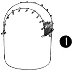
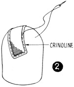
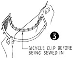
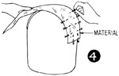
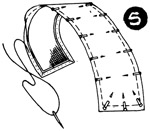
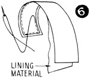
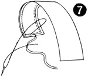
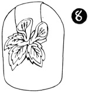

1952—How to Make Hats
by Ruby Carnahan
Half Hat
HALF HAT FRAME
(Illus. 1) Cut a bias piece of elastic net 5" x 11 1/2", dampen and place on Utility Block (head block). Pull into shape from side to side and pin to block with push pins. Let dry on block. Measure a wire and sew on edge of frame, using a buttonhole stitch. Join ends of wire with a joiner.
(Illus. 2) Cut 2" strips of crinoline (stretch crinoline strips before using) and fold over wired edge and baste.
(Illus. 3) Pin a metal bicycle clip on each side of frame underneath. Baste a strip of crinoline over each clip and stitch crinoline around clips.
The bicycle clip holds hat secure on head and can be purchased in any Millinery Supply House.
COVERING HALF HAT FRAME
(Illus. 4) Cut a 7" bias piece of material, pin to one end of frame, stretch material over top of frame and pin to other end.
(Illus. 5) Turn material over edge of frame and sew to under side.
LINING HALF HAT
(Illus. 6) Fit a bias piece of lining material to under side of frame and sew around edge.
(Illus. 7) Finish with a blocked grosgrain ribbon band inside edge of frame.
TRIMMING HALF HAT
(Illus. 8) Use bows or flowers for trimming each side of half hat or entire hat frame can be covered with leaves. Each leaf sewn on with a pearl bead and a small piece of veiling is all the trimming required.